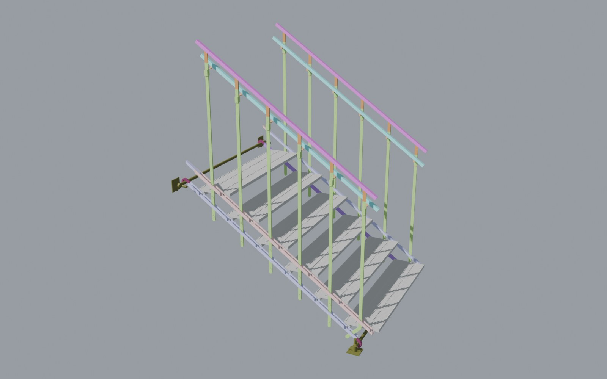
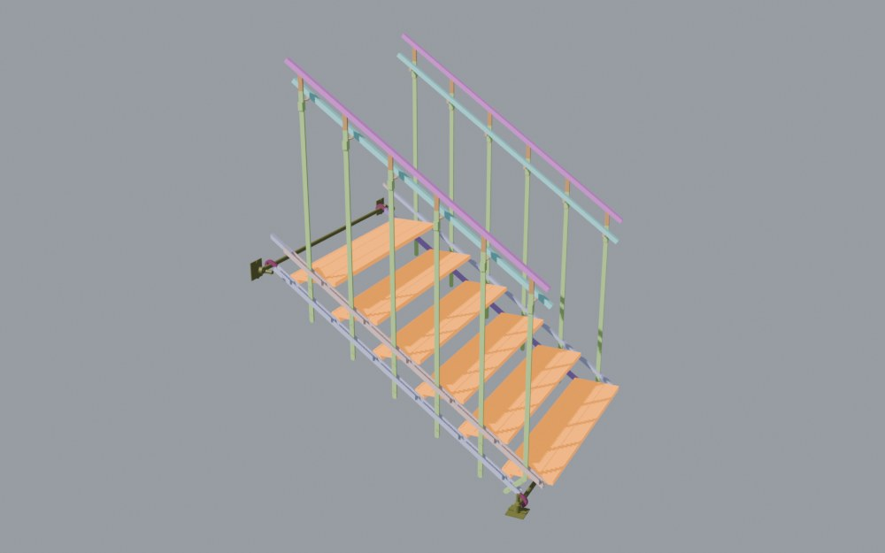
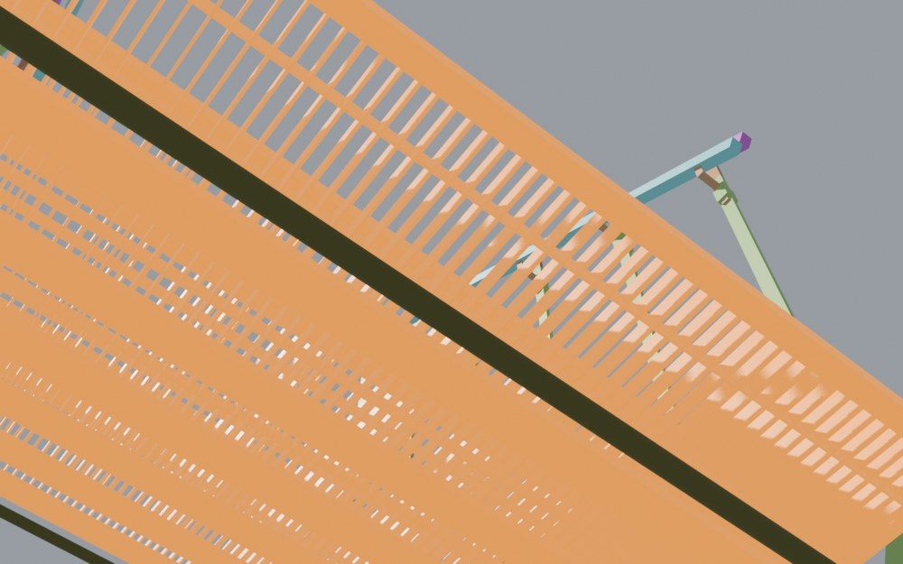
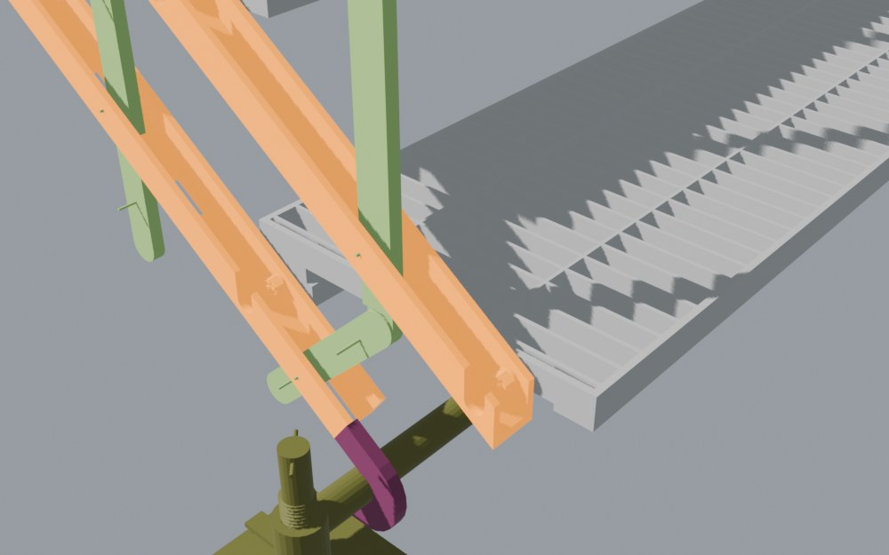
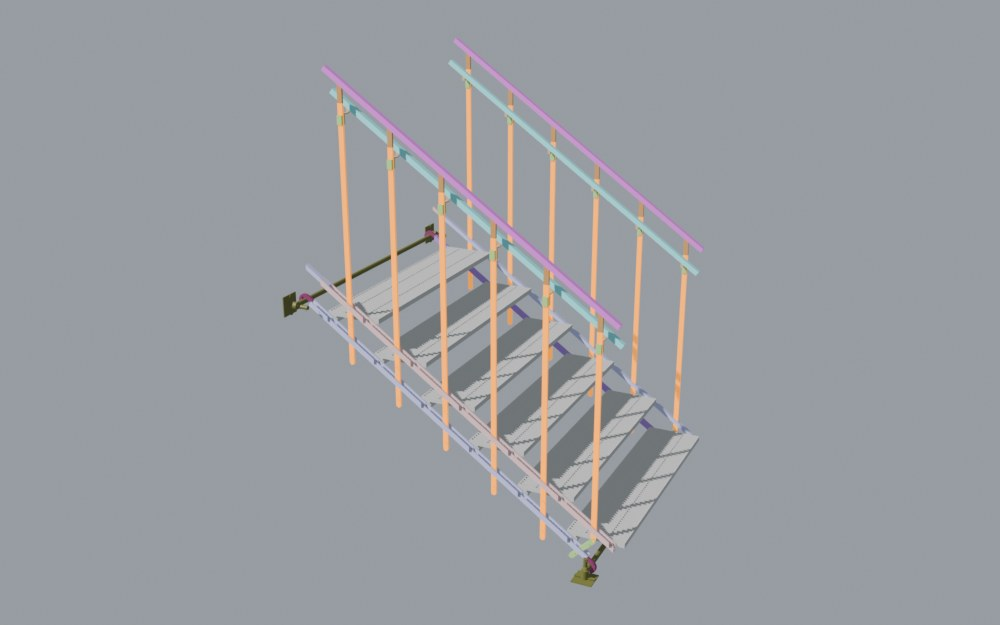
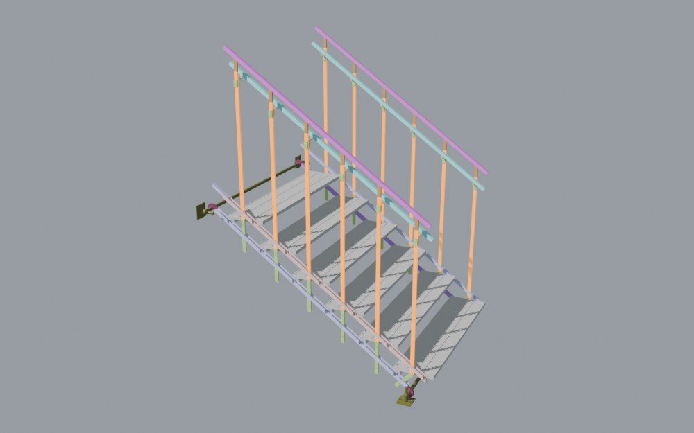
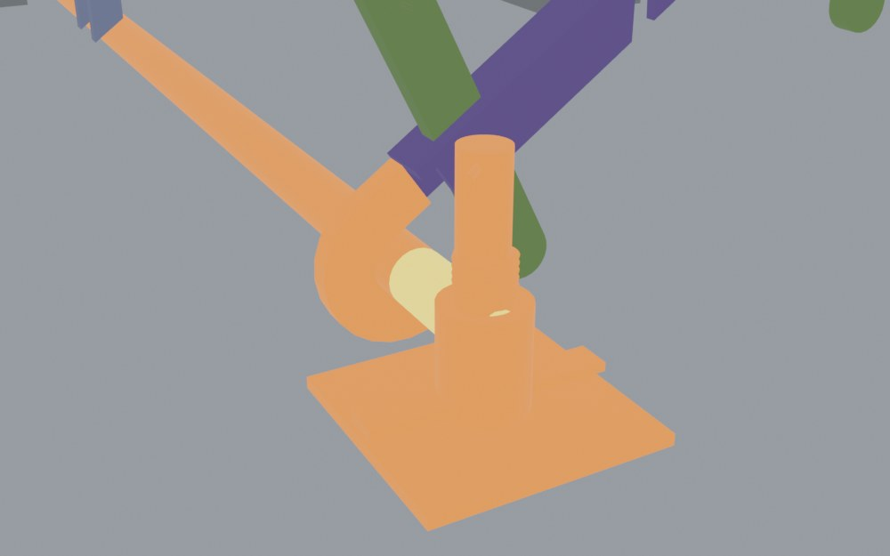
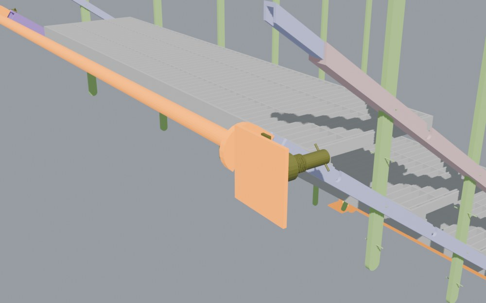
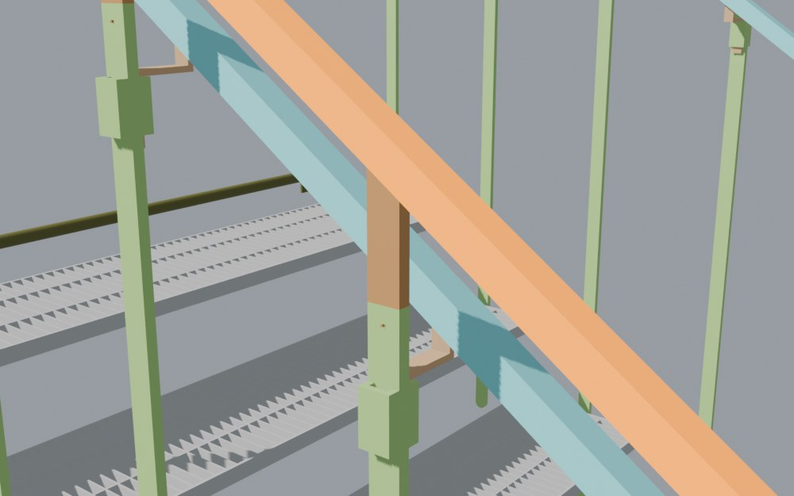
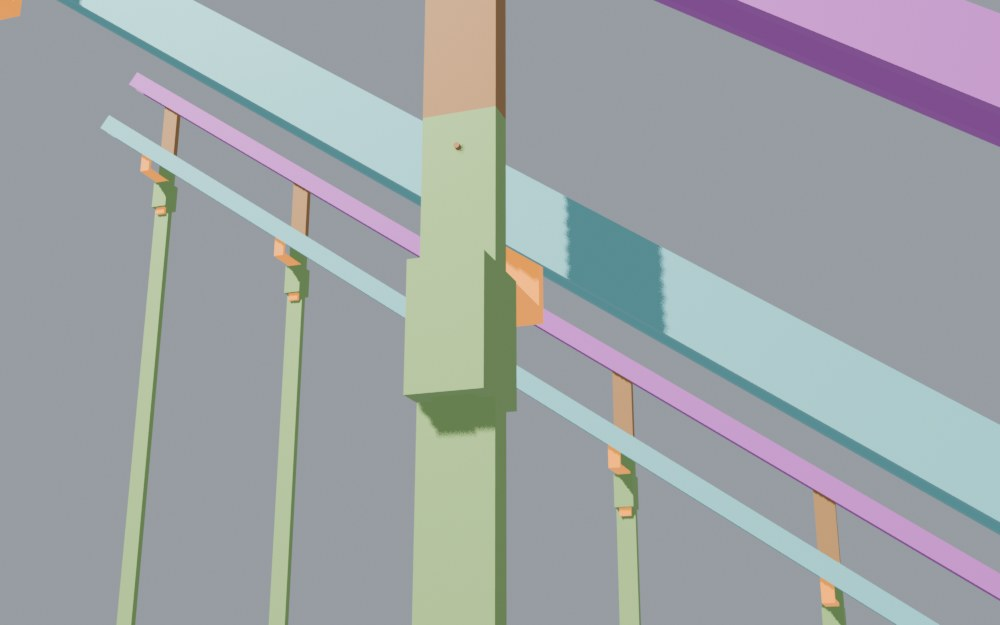

<title>Stair Change List Rev C</title>
<link rel="preconnect" href="https://fonts.googleapis.com">
<link rel="stylesheet" href="https://fonts.googleapis.com/css2?family=Barlow+Semi+Condensed:wght@500;600;700&family=IBM+Plex+Mono:wght@400;500&family=IBM+Plex+Sans:wght@400;500;600&display=swap">
<style>
:root {
  --paper:#EFF2F2; --surface:#FFFFFF; --ink:#15202A; --ink2:#4B5966; --rule:#D3DADE; --soft:#E6EBED;
  --accent:#1E5A86; --accentbg:#E1ECF4; --new:#C2410C; --newbg:#FDEBDD; --old:#8A96A0;
  --pass:#2F7A4F; --passbg:#E2F1E7; --warn:#9A620E; --warnbg:#FBEFD8; --fail:#B42318; --failbg:#FBE3E0;
  --display:"Barlow Semi Condensed","Arial Narrow",system-ui,sans-serif;
  --body:"IBM Plex Sans",system-ui,-apple-system,"Segoe UI",sans-serif;
  --mono:"IBM Plex Mono",ui-monospace,"Cascadia Mono",Consolas,monospace;
}
@media (prefers-color-scheme: dark) {
  :root:not([data-theme="light"]) {
    --paper:#0E151B; --surface:#152029; --ink:#E3E9ED; --ink2:#9DACB8; --rule:#27353F; --soft:#1B2833;
    --accent:#7DB7E3; --accentbg:#16283A; --new:#FB923C; --newbg:#3A2112; --old:#6B7985;
    --pass:#6CC790; --passbg:#17301F; --warn:#E6B45A; --warnbg:#382B12; --fail:#FF8C80; --failbg:#3A1B18; color-scheme:dark;
  }
}
:root[data-theme="dark"] {
  --paper:#0E151B; --surface:#152029; --ink:#E3E9ED; --ink2:#9DACB8; --rule:#27353F; --soft:#1B2833;
  --accent:#7DB7E3; --accentbg:#16283A; --new:#FB923C; --newbg:#3A2112; --old:#6B7985;
    --pass:#6CC790; --passbg:#17301F; --warn:#E6B45A; --warnbg:#382B12; --fail:#FF8C80; --failbg:#3A1B18; color-scheme:dark;
}
* { box-sizing:border-box; }
body { background:var(--paper); color:var(--ink); font:15.5px/1.6 var(--body); margin:0; padding-inline:16px; padding-block:28px 64px; }
.wrap { max-width:1120px; margin:0 auto; display:grid; gap:34px; }
h1,h2,h3 { font-family:var(--display); text-wrap:balance; margin:0; letter-spacing:.01em; }
h1 { font-size:clamp(34px,5vw,52px); line-height:1.02; }
h2 { font-size:27px; font-weight:600; }
h3 { font-size:21px; font-weight:600; line-height:1.15; }
p { margin:0; max-width:72ch; }
a { color:var(--accent); }
a:focus-visible { outline:2px solid var(--accent); outline-offset:2px; }
.mono { font-family:var(--mono); font-variant-numeric:tabular-nums; }
.eyebrow { font:600 12px/1 var(--mono); letter-spacing:.12em; text-transform:uppercase; color:var(--accent); }
header.top { display:grid; gap:12px; }
header.top p { color:var(--ink2); font-size:16.5px; }
.result { display:flex; flex-wrap:wrap; gap:0; border:1px solid var(--rule); background:var(--surface); }
.result div { flex:1 1 180px; padding:12px 16px; border-right:1px solid var(--rule); display:grid; gap:2px; }
.result div:last-child { border-right:0; }
.result span { font-size:12.5px; color:var(--ink2); }
.result b { font:600 23px/1.15 var(--display); font-variant-numeric:tabular-nums; }
.result b s { color:var(--ink2); font-weight:500; font-size:18px; margin-right:6px; }
section { display:grid; gap:16px; }
section > h2 { border-top:2px solid var(--ink); padding-top:12px; }
.rules { margin:0; padding:0; list-style:none; display:grid; grid-template-columns:repeat(auto-fit,minmax(240px,1fr)); gap:10px; counter-reset:r; }
.rules li { background:var(--surface); border:1px solid var(--rule); padding:12px 14px; font-size:14.5px; }
.rules li b { display:block; font-family:var(--display); font-size:17px; font-weight:600; }
/* figures */
.figs { display:grid; grid-template-columns:repeat(auto-fit,minmax(min(100%,460px),1fr)); gap:16px; }
.fig { margin:0; background:var(--surface); border:1px solid var(--rule); }
.fig:first-child { grid-column:1 / -1; }
.shot { position:relative; }
.shot img { width:100%; height:auto; display:block; }
.mk { position:absolute; transform:translate(-50%,-50%); width:28px; height:28px; border-radius:50%; background:var(--accent); color:#fff;
      font:600 13px/28px var(--mono); text-align:center; text-decoration:none; box-shadow:0 0 0 3px rgba(255,255,255,.85); }
.mk.new { background:var(--new); }
.mk:hover, .mk:focus-visible { transform:translate(-50%,-50%) scale(1.15); outline:none; }
.fig figcaption { padding:9px 12px; font-size:13.5px; color:var(--ink2); border-top:1px solid var(--rule); }
.fig figcaption b { color:var(--ink); font-family:var(--mono); font-weight:500; margin-right:6px; }
.key { display:flex; flex-wrap:wrap; gap:14px; font-size:13px; color:var(--ink2); align-items:center; }
.key i { display:inline-block; width:14px; height:14px; border-radius:50%; vertical-align:-2px; margin-right:6px; }
/* summary table */
.tw { overflow-x:auto; border:1px solid var(--rule); background:var(--surface); }
table { border-collapse:collapse; width:100%; font-size:14px; }
th, td { padding:8px 12px; border-bottom:1px solid var(--rule); text-align:left; vertical-align:top; }
thead th { font:600 11.5px/1.2 var(--mono); letter-spacing:.06em; text-transform:uppercase; color:var(--ink2); background:var(--soft); }
tbody tr:last-child > * { border-bottom:0; }
tbody th { font-weight:500; }
td.strong { font-weight:600; }
/* change cards */
.cards { display:grid; gap:14px; }
.card { background:var(--surface); border:1px solid var(--rule); padding:16px 18px; display:grid; gap:12px; scroll-margin-top:16px; }
.card:target { box-shadow:0 0 0 2px var(--accent); }
.card header { display:flex; gap:12px; align-items:center; }
.num { flex:none; width:36px; height:36px; border-radius:50%; background:var(--accent); color:#fff; font:600 16px/36px var(--mono); text-align:center; }
.meta { color:var(--ink2); font-size:13px; }
.nowto { display:grid; grid-template-columns:1fr 1.5fr; gap:10px; }
.nowto > div { padding:10px 12px; display:grid; gap:4px; min-width:0; }
.now { background:var(--soft); }
.to { background:var(--newbg); }
.nowto span, .how > span { font:600 11px/1 var(--mono); letter-spacing:.1em; text-transform:uppercase; color:var(--ink2); }
.to span { color:var(--new); }
.how ul { margin:6px 0 0; padding-left:20px; display:grid; gap:3px; }
.refs { display:grid; grid-template-columns:1fr 1fr; gap:8px; }
.refs figure { margin:0; border:1px solid var(--rule); background:var(--paper); }
.refs img { width:100%; height:auto; display:block; }
.refs figcaption { font:500 12px/1 var(--mono); color:var(--ink2); padding:7px 9px; letter-spacing:.04em; }
@media (max-width: 640px) { .refs { grid-template-columns:1fr; } }
.tagc { font:600 11px/1 var(--mono); letter-spacing:.06em; text-transform:uppercase; color:var(--warn); background:var(--warnbg); padding:4px 7px; vertical-align:middle; margin-left:6px; }
.card.consider { border-style:dashed; }
.cnote { background:var(--warnbg); padding:10px 12px; font-size:14px; max-width:none; }
.st.none, .st.site { color:var(--ink2); background:var(--soft); }
.st.cond { color:var(--accent); background:var(--accentbg); }
.whyload { display:grid; grid-template-columns:1fr 1fr; gap:10px; }
.whyload > div { border:1px solid var(--rule); padding:10px 12px; display:grid; gap:6px; align-content:start; min-width:0; }
.whyload > div > span { font:600 11px/1 var(--mono); letter-spacing:.1em; text-transform:uppercase; color:var(--ink2); }
.why ul { margin:0; padding:0; list-style:none; display:grid; gap:6px; font-size:14px; }
.ref { display:inline-block; font:600 11.5px/1.4 var(--mono); color:var(--accent); background:var(--accentbg); padding:0 5px; margin-right:6px; }
.load p { font-size:14px; }
.ba { display:grid; grid-template-columns:1fr 1fr; gap:6px; font-size:13px; }
.ba div { padding:6px 8px; background:var(--soft); }
.ba div:last-child { background:var(--passbg); }
.ba i { display:block; font:600 10.5px/1.3 var(--mono); letter-spacing:.08em; text-transform:uppercase; font-style:normal; color:var(--ink2); }
.st { display:inline-block; font:600 11px/1 var(--mono); letter-spacing:.05em; text-transform:uppercase; padding:4px 7px; white-space:nowrap; }
.st.pass { color:var(--pass); background:var(--passbg); } .st.part, .st.test { color:var(--warn); background:var(--warnbg); } .st.open { color:var(--fail); background:var(--failbg); }
@media (max-width: 760px) { .whyload { grid-template-columns:1fr; } }
.draw { overflow-x:auto; border:1px solid var(--rule); background:var(--paper); padding:8px; }
.sec { display:block; width:100%; min-width:520px; height:auto; max-height:320px; }
.sec .old { fill:none; stroke:var(--old); stroke-width:2; stroke-dasharray:5 4; }
.sec .old2 { fill:var(--soft); stroke:var(--old); stroke-width:1.5; }
.sec .new { fill:var(--new); stroke:var(--new); stroke-width:1; }
.sec .new2 { fill:var(--accent); stroke:var(--accent); stroke-width:1; }
.sec .newf { fill:var(--newbg); stroke:var(--new); stroke-width:1.5; }
.sec .void { fill:var(--paper); stroke:none; }
.sec .rib { stroke:var(--new); stroke-width:1.5; }
.sec .dim { stroke:var(--ink2); stroke-width:1.2; }
.sec .axle { fill:none; stroke:var(--ink2); stroke-width:1.5; stroke-dasharray:3 3; }
.sec .grd { stroke:var(--ink); stroke-width:2; }
.sec .newl { stroke:var(--new); stroke-width:4; }
.sec .old2l { stroke:var(--old); stroke-width:4; }
.sec .postl { stroke:var(--ink2); stroke-width:6; }
.sec text { fill:var(--ink); font-family:var(--mono); font-size:13px; }
.sec .tag { fill:var(--ink2); font-size:12px; letter-spacing:.08em; }
.sec .note { fill:var(--new); font-size:12.5px; }
.sec .note2 { fill:var(--accent); font-size:12.5px; }
.notmodel { margin:0; padding-left:20px; display:grid; gap:8px; color:var(--ink2); max-width:80ch; }
.notmodel b { color:var(--ink); }
footer { color:var(--ink2); font-size:12.5px; border-top:1px solid var(--rule); padding-top:12px; display:grid; gap:4px; }
@media (max-width: 700px) { .nowto { grid-template-columns:1fr; } }
@media (prefers-reduced-motion: reduce) { .mk:hover { transform:translate(-50%,-50%); } }
</style>
<style>
.num.fcrit, .mk.fcrit { background:var(--fail); }
.card .num { font-size:14px; width:40px; }
.mk { width:32px; height:32px; line-height:32px; font-size:12px; }
.card .refs { grid-template-columns:repeat(auto-fit,minmax(min(100%,260px),1fr)); }
.why1 { display:grid; gap:4px; } .why1 > span { font:600 11px/1 var(--mono); letter-spacing:.1em; text-transform:uppercase; color:var(--ink2); } .why1 p { max-width:80ch; }
.sec .arrowh { fill:var(--ink2); }
.decide { display:inline-block; font:600 11px/1 var(--mono); letter-spacing:.06em; text-transform:uppercase; color:var(--warn); background:var(--warnbg); padding:4px 7px; margin-left:6px; vertical-align:middle; }
.lists { display:grid; grid-template-columns:repeat(auto-fit,minmax(min(100%,320px),1fr)); gap:14px; }
.lists > div { background:var(--surface); border:1px solid var(--rule); padding:12px 16px; }
.lists h3 { font-size:18px; margin-bottom:6px; } .lists ul { margin:0; padding-left:18px; display:grid; gap:4px; font-size:14.5px; }
.control { display:grid; grid-template-columns:repeat(auto-fit,minmax(150px,1fr)); border:1px solid var(--rule); background:var(--surface); }
.control div { padding:10px 14px; border-right:1px solid var(--rule); display:grid; gap:3px; } .control div:last-child { border-right:0; }
.control span { font:500 11px/1 var(--mono); letter-spacing:.08em; text-transform:uppercase; color:var(--ink2); } .control b { font:500 13.5px/1.3 var(--mono); }
</style>
<main class="wrap">
  <div class="control" role="group" aria-label="Document control">
    <div><span>Document</span><b>Change list</b></div><div><span>Revision</span><b>C · 27 Sep 2026</b></div>
    <div><span>Model</span><b>25 Sep, cleaned 26 Sep</b></div><div><span>For</span><b>SketchUp redraw</b></div>
  </div>
  <header class="top">
    <div class="eyebrow">SketchUp change list · folding stair unit · Rev C</div>
    <h1>What to change in the model</h1>
    <p>Every change still needed on the current model, and nothing else. Each one says what’s in the model now, what to draw instead, and why. Sizes are final unless marked “decide”. Checked against the Aug-2026 events sheet (R-numbers are its rows).</p>
    <div class="result">
      <div><span>Crowd the unit carries</span><b><s>1.1</s>7.5 kN/m²</b></div>
      <div><span>Push on the top rail</span><b><s>0.16</s>3.0 kN/m</b></div>
      <div><span>4 kN on a step</span><b><s>3.6×</s>0.4–0.8</b></div>
      <div><span>Weight per unit</span><b><s>61</s>≈ 88–98 kg</b></div>
    </div>
  </header>
  <section>
    <h2>Decided and open</h2>
    <div class="lists">
      <div><h3>Already decided</h3><ul><li>Steps: thin closed box (A); open grating (C) is the alternative.</li><li>Hooks cut or bent as part of the rails, and locked onto the axles.</li><li>Each pole is one piece with its locking end (4 pegs).</li><li>Poles solid; they are the crowd barrier.</li><li>Top rail keeps its channel; the owner adds padding.</li><li>No middle rail, toe board or feet; the scaffold supports the unit.</li><li>Jacks stand on the ground or on a scaffold.</li></ul></div>
      <div><h3>Still to decide</h3><ul><li>Top rail height: which line the approver measures from (F6).</li><li>Build route: best strength or lower cost (see the <a href="#">manufacturing guide</a>).</li></ul></div>
    </div>
  </section>
  <section>
    <h2>Where the changes are</h2>
    <div class="key"><span><i style="background:var(--fail)"></i>needed to pass (F1–F5)</span><span><i style="background:var(--accent)"></i>smaller or a decision (F6, F8, F9)</span><span>Click a number to jump to it. In the pictures, <b style="color:#E8590C">orange</b> = change, <b style="color:#D11A1A">red</b> = remove, <b style="color:#B8960C">yellow</b> = missing.</span></div>
    <figure class="fig" id="figG"><div class="shot"><a class="mk fcrit" href="#f1" style="left:48.72%;top:59.24%" aria-label="Change F1">F1</a><a class="mk fcrit" href="#f2" style="left:50.66%;top:77.65%" aria-label="Change F2">F2</a><a class="mk fcrit" href="#f3" style="left:39.84%;top:61.33%" aria-label="Change F3">F3</a><a class="mk fcrit" href="#f4" style="left:39.24%;top:46.88%" aria-label="Change F4">F4</a><a class="mk fcrit" href="#f5" style="left:58.47%;top:92.58%" aria-label="Change F5">F5</a><a class="mk" href="#f6" style="left:38.64%;top:19.63%" aria-label="Change F6">F6</a><a class="mk" href="#f8" style="left:54.95%;top:47.13%" aria-label="Change F8">F8</a><a class="mk" href="#f9" style="left:46.88%;top:24.52%" aria-label="Change F9">F9</a></div>
      <figcaption><b>Overview</b> current model (25 Sep, cleaned 26 Sep), standard stair</figcaption></figure>
  </section>
  <section>
    <h2>All changes at a glance</h2>
    <div class="tw"><table><thead><tr><th>#</th><th>Part</th><th>Now</th><th>Change to</th><th>Sheet rows</th></tr></thead><tbody><tr><td class="mono"><a href="#f1">F1</a></td><th scope="row">Steps</th><td>open J + L, grating front to back</td><td class="strong">A thin closed box (C open grating is the alternative)</td><td class="mono">R113 R114 R115 R7</td></tr><tr><td class="mono"><a href="#f2">F2</a></td><th scope="row">Step pins and rails</th><td>Ø10 pins, rails 20–25 deep</td><td class="strong">Ø20 pins, rails about 70 deep, 20 mm metal round each hole</td><td class="mono">R113 R170</td></tr><tr><td class="mono"><a href="#f3">F3</a></td><th scope="row">Pole locking pegs</th><td>2 mm, lower rail only</td><td class="strong">12 mm, 2 per rail, notches lined up</td><td class="mono">R78 R104</td></tr><tr><td class="mono"><a href="#f4">F4</a></td><th scope="row">Poles</th><td>hollow 25 × 10 × 2 through the rails</td><td class="strong">solid 25 × 55 tapering to 15, outside the rails, bolted</td><td class="mono">R142 R143 R179</td></tr><tr><td class="mono"><a href="#f5">F5</a></td><th scope="row">Supports</th><td>Ø25 × 2.5 axle short of the right support; no collars; no hook lock</td><td class="strong">one 48.3 × 4 tube each end (or jacks under hooks), collars, hook locks, landing bolts</td><td class="mono">R147 R150 R73</td></tr><tr><td class="mono"><a href="#f6">F6</a></td><th scope="row">Top rail height</th><td>1,013 above the pitch line</td><td class="strong">decide the measuring line; +90 mm if the pitch line</td><td class="mono">R63</td></tr><tr><td class="mono"><a href="#f7">F7</a></td><th scope="row">Handrail</th><td>U 25 × 25 channel</td><td class="strong">no change (owner’s padding)</td><td class="mono">R64</td></tr><tr><td class="mono"><a href="#f8">F8</a></td><th scope="row">Handrail brackets</th><td>15 wide</td><td class="strong">25 wide</td><td class="mono">R143</td></tr><tr><td class="mono"><a href="#f9">F9</a></td><th scope="row">Drawing</th><td>duplicates, empty faces, line-to-line fits</td><td class="strong">delete copies, add clearances</td><td class="mono">—</td></tr></tbody></table></div>
  </section>
  <section>
    <h2>The changes</h2>
    <div class="cards">
    <article class="card" id="f1">
      <header><span class="num fcrit">F1</span><div><h3>Steps: redraw as a thin closed box (A)</h3><p class="meta">6 per unit · needed to pass · open grating (C) is the alternative</p></div></header>
      <div class="nowto">
        <div class="now"><span>In the model now</span><p>Open J at the back, a small L at the front edge, grating bars running front to back, two thin flats along the step (joined to the end plates). 4 kN on the front edge is 3.6× too much; a crowd sags the front edge 17.5 mm (limit 4.9).</p></div>
        <div class="to"><span>Change to</span><p><b>A (draw this)</b> thin closed box, 280 × 50 outside: 3 mm top, 2 mm bottom, 2 mm front and back walls, two 2 mm inner webs at 95 and 185 mm from the back, drain holes in the top and the bottom. <b>C (alternative)</b> open grating in the same 280 × 50: 3 × 50 bearing bars running along the step every 46 mm, a 5 mm back bar, an 8 × 50 front bar, 3 × 25 cross bars on top every 50 mm. Same end plates and pins for both.</p></div>
      </div>
      <div class="why1"><span>Why</span><p>The step spans 1.2 m between the rails, so the parts that carry the load must run along that length and be either closed (A) or 50 mm deep (C). Today’s grating bars run the short way, so the J and the small L carry everything and twist. Open shapes only 25 mm deep fail, even as a fine lattice.</p></div>
      <div class="draw"><svg class="sec" viewBox="0 0 730 339" role="img" aria-label="Step sections: A thin closed box (chosen), C open grating with bars along the step (alternative), and the step as drawn now"><text class="tag" x="20.0" y="18.0" text-anchor="start">A · CHOSEN · thin closed box</text><rect class="new" x="20.0" y="30.0" width="350.0" height="3.8"/><rect class="new" x="20.0" y="90.0" width="350.0" height="2.5"/><rect class="new" x="20.0" y="30.0" width="2.5" height="62.5"/><rect class="new" x="367.5" y="30.0" width="2.5" height="62.5"/><rect class="new" x="137.5" y="30.0" width="2.5" height="62.5"/><rect class="new" x="250.0" y="30.0" width="2.5" height="62.5"/><rect class="void" x="38.8" y="29.0" width="15.0" height="5.8"/><rect class="void" x="95.0" y="29.0" width="15.0" height="5.8"/><rect class="void" x="151.2" y="29.0" width="15.0" height="5.8"/><rect class="void" x="207.5" y="29.0" width="15.0" height="5.8"/><rect class="void" x="263.8" y="29.0" width="15.0" height="5.8"/><rect class="void" x="320.0" y="29.0" width="15.0" height="5.8"/><rect class="void" x="63.8" y="89.0" width="15.0" height="4.5"/><rect class="void" x="120.0" y="89.0" width="15.0" height="4.5"/><rect class="void" x="176.2" y="89.0" width="15.0" height="4.5"/><rect class="void" x="232.5" y="89.0" width="15.0" height="4.5"/><rect class="void" x="288.8" y="89.0" width="15.0" height="4.5"/><rect class="void" x="345.0" y="89.0" width="15.0" height="4.5"/><text class="note" x="400.0" y="40.0" text-anchor="start">3 top · 2 bottom · 2 front and back walls</text><text class="note" x="400.0" y="56.0" text-anchor="start">2 inner webs 2 at 95 and 185 from the back</text><text class="note" x="400.0" y="72.0" text-anchor="start">drain holes in the top and the bottom</text><text class="" x="400.0" y="88.0" text-anchor="start">4 kN at the front edge 0.41 · 5.9 kg per step</text><text class="tag" x="20.0" y="124.5" text-anchor="start">C · ALTERNATIVE · open grating, bars along the step</text><rect class="newf" x="20.0" y="136.5" width="350.0" height="31.2"/><rect class="new" x="20.0" y="136.5" width="6.2" height="62.5"/><rect class="new" x="78.5" y="136.5" width="3.8" height="62.5"/><rect class="new" x="135.8" y="136.5" width="3.8" height="62.5"/><rect class="new" x="193.1" y="136.5" width="3.8" height="62.5"/><rect class="new" x="250.4" y="136.5" width="3.8" height="62.5"/><rect class="new" x="307.7" y="136.5" width="3.8" height="62.5"/><rect class="new" x="360.0" y="136.5" width="10.0" height="62.5"/><text class="note" x="400.0" y="146.5" text-anchor="start">3 × 50 bars every 46 mm, 5 mm back bar</text><text class="note" x="400.0" y="162.5" text-anchor="start">8 × 50 front bar</text><text class="note" x="400.0" y="178.5" text-anchor="start">3 × 25 cross bars on top every 50 mm (light)</text><text class="" x="400.0" y="194.5" text-anchor="start">4 kN at the front edge 0.81 · 6.2 kg per step</text><text class="tag" x="20.0" y="231.0" text-anchor="start">NOW · open J + L, grating front to back</text><rect class="old" x="26.2" y="243.0" width="337.5" height="31.2"/><rect class="old2" x="20.0" y="243.0" width="6.2" height="62.5"/><rect class="old2" x="20.0" y="299.2" width="62.5" height="6.2"/><rect class="old2" x="76.2" y="283.6" width="6.2" height="21.9"/><rect class="old2" x="363.8" y="243.0" width="6.2" height="31.2"/><rect class="old2" x="335.6" y="268.0" width="34.4" height="6.2"/><text class="" x="400.0" y="253.0" text-anchor="start">J at the back, L at the front,</text><text class="" x="400.0" y="269.0" text-anchor="start">grating bars (dashed) run front to back</text><text class="" x="400.0" y="285.0" text-anchor="start">3.6× too much at 4 kN</text><line class="dim" x1="20.0" y1="317.5" x2="370.0" y2="317.5"/><text class="" x="195.0" y="331.5" text-anchor="middle">280 deep, 50 high, same for all</text></svg></div>
      <div class="refs"><figure><figcaption>Where: all 6 steps (orange)</figcaption></figure><figure><figcaption>The steps as drawn now</figcaption></figure><figure><figcaption>From below: J, L, bars and flats</figcaption></figure></div>
      <div class="how"><span>In SketchUp</span><ul><li>Draw A. If C is used instead, only the step section changes; the end plates and pins stay the same.</li><li>Keep the walking surface height, the end plates and every pin hole exactly where they are.</li><li>Add a lip at least 5 mm down along the front edge so the open gap under each step is 120 or less (a 35 mm lip gives the recommended 100).</li><li>A: holes up to about a fifth of each plate, at least 20 mm from the walls and webs; holes in the bottom plate too, so water runs through. C: serrated bar tops.</li></ul></div>
      <div class="tw"><table><thead><tr><th>Step (280 × 50 outside, with drain holes)</th><th>4 kN at the front edge (≤ 1)</th><th>Sag under 4 kN, mm (≤ 12.2)</th><th>Crowd sag, mm (≤ 4.9)</th><th>kg per step</th></tr></thead><tbody>
<tr><td><b>A · chosen</b> thin closed box: 3 top / 2 bottom / 2 walls, two 2 mm inner webs</td><td class="mono">0.41 (0.82 if welded)</td><td class="mono">3.6</td><td class="mono">1.1</td><td class="mono">5.9</td></tr>
<tr><td><b>C · alternative</b> open grating: 3 × 50 bars every 46 mm along the step, 8 mm front bar</td><td class="mono">0.81 (press-locked)</td><td class="mono">9.2</td><td class="mono">3.0</td><td class="mono">6.2</td></tr>
<tr><td>Now: open J + L with grating front to back</td><td class="mono">3.64</td><td class="mono">58</td><td class="mono">17.5</td><td class="mono">6.4</td></tr>
</tbody></table></div>
    </article>
    <article class="card" id="f2">
      <header><span class="num fcrit">F2</span><div><h3>Step pins 20 mm, rails about 70 deep</h3><p class="meta">4 pins per step · 4 rails · needed to pass</p></div></header>
      <div class="nowto">
        <div class="now"><span>In the model now</span><p>Ø10 pins at the step ends. On the right side each pin crosses a 14 mm gap (end plate, washer, 7 mm bush, rail wall). At the top step each pin carries about 11.2 kN. Rails are 20–25 deep with the pin holes cutting most of the section.</p></div>
        <div class="to"><span>Change to</span><p>Ø20 pins and Ø20 holes in the rails and step end plates, with bushes and washers to suit. Rails about 70 deep, same widths, 5 mm walls, with at least 20 mm of metal between every hole and the nearest free edge.</p></div>
      </div>
      <div class="why1"><span>Why</span><p>Each step also props the upper rail off the lower one, so its pins carry that bracing force and bend across the gap. Ø10 is 5.3× too weak; Ø20 is at 0.66. The deeper rails carry the bigger holes (0.87 at the hole edge) and the sideways push from the poles (F4).</p></div>
      <div class="draw"><svg class="sec" viewBox="0 0 900 390" role="img" aria-label="Step pin: 10 mm now, 20 mm after; rail deepened to about 65 mm"><text class="tag" x="60.0" y="18.0" text-anchor="start">NOW · Ø10 pin (right-hand side)</text><rect class="old2" x="90.0" y="95.0" width="20.0" height="160.0"/><rect class="old2" x="110.0" y="95.0" width="8.0" height="160.0"/><rect class="old2" x="118.0" y="95.0" width="28.0" height="160.0"/><rect class="old2" x="146.0" y="95.0" width="20.0" height="160.0"/><rect class="old" x="60.0" y="155.0" width="136.0" height="40.0"/><text class="" x="110.0" y="271.0" text-anchor="end">end plate</text><text class="" x="146.0" y="271.0" text-anchor="start">rail wall</text><line class="dim" x1="114.0" y1="255.0" x2="114.0" y2="281.0"/><text class="" x="114.0" y="293.0" text-anchor="middle">washer</text><line class="dim" x1="132.0" y1="255.0" x2="132.0" y2="299.0"/><text class="" x="132.0" y="311.0" text-anchor="middle">bush</text><line class="dim" x1="100.0" y1="61.0" x2="100.0" y2="91.0"/><polygon class="arrowh" points="100.0,91.0 97.3,84.6 102.7,84.6"/><text class="" x="108.0" y="73.0" text-anchor="start">step load</text><line class="dim" x1="100.0" y1="51.0" x2="156.0" y2="51.0"/><text class="" x="128.0" y="45.0" text-anchor="middle">lever 14 mm</text><text class="" x="60.0" y="335.0" text-anchor="start">bends 5.3× too much at the top step</text><text class="tag" x="360.0" y="18.0" text-anchor="start">CHANGE TO · Ø20 pin, Ø20 holes</text><rect class="old2" x="390.0" y="95.0" width="20.0" height="160.0"/><rect class="old2" x="410.0" y="95.0" width="8.0" height="160.0"/><rect class="old2" x="418.0" y="95.0" width="28.0" height="160.0"/><rect class="old2" x="446.0" y="95.0" width="20.0" height="160.0"/><rect class="new" x="360.0" y="135.0" width="136.0" height="80.0"/><text class="" x="410.0" y="271.0" text-anchor="end">end plate</text><text class="" x="446.0" y="271.0" text-anchor="start">rail wall</text><line class="dim" x1="414.0" y1="255.0" x2="414.0" y2="281.0"/><text class="" x="414.0" y="293.0" text-anchor="middle">washer</text><line class="dim" x1="432.0" y1="255.0" x2="432.0" y2="299.0"/><text class="" x="432.0" y="311.0" text-anchor="middle">bush</text><line class="newl" x1="400.0" y1="61.0" x2="400.0" y2="91.0"/><polygon class="new" points="400.0,91.0 397.3,84.6 402.7,84.6"/><text class="" x="408.0" y="73.0" text-anchor="start">step load</text><line class="dim" x1="400.0" y1="51.0" x2="456.0" y2="51.0"/><text class="" x="428.0" y="45.0" text-anchor="middle">lever 14 mm</text><text class="note" x="360.0" y="335.0" text-anchor="start">0.66 bending, 0.25 shear</text><text class="tag" x="660.0" y="18.0" text-anchor="start">RAIL · 25 deep → about 70 deep</text><rect class="old" x="660.0" y="40.0" width="50.0" height="50.0"/><text class="" x="685.0" y="106.0" text-anchor="middle">now</text><rect class="new" x="750.0" y="40.0" width="50.0" height="140.0"/><rect class="void" x="760.0" y="50.0" width="30.0" height="130.0"/><circle class="void" cx="775.0" cy="84.0" r="20.0"/><text class="note" x="660.0" y="202.0" text-anchor="start">70 deep; 20 mm of metal</text><text class="note" x="660.0" y="220.0" text-anchor="start">round each Ø20 hole</text></svg></div>
      <div class="refs"><figure><figcaption>Where: the 4 guide rails and the step-pin hardware</figcaption></figure><figure><figcaption>Pins through the rails at the base</figcaption></figure></div>
      <div class="how"><span>In SketchUp</span><ul><li>Keep every hole centre where it is; the rails grow away from their holes.</li><li>Right rails grow downwards; the left channels deepen by the same amount so a neighbour’s right rail still drops fully in.</li><li>Put each split-pin hole just outside its nut.</li></ul></div>
      
    </article>
    <article class="card" id="f3">
      <header><span class="num fcrit">F3</span><div><h3>Pole locking pegs 12 mm, upper pair added</h3><p class="meta">12 poles, 4 pegs each · needed to pass</p></div></header>
      <div class="nowto">
        <div class="now"><span>In the model now</span><p>Each pole is one piece with its locking end, which drops through both rails. The lower rail has two 2 mm pegs, one each side, reaching 7.5 mm across to holes in the rail walls. The upper rail has only a hole through the pole, no pegs. The left upper rail’s notches are about 9 mm off the poles.</p></div>
        <div class="to"><span>Change to</span><p>12 mm pegs, 2 at each rail (4 per pole), with the rail-wall notches widened to suit and lined up with the poles, 0.5 mm clearance each side.</p></div>
      </div>
      <div class="why1"><span>Why</span><p>The pegs hold the upper and lower rail at their spacing; that is what stops each side folding flat under a crowd. Each rail’s pair passes about 5.9 kN, and each peg bends over its 7.5 mm reach. 12 mm pegs are at 0.58.</p></div>
      <div class="draw"><svg class="sec" viewBox="0 0 900 262" role="img" aria-label="Pole locking end in the rail: 2 mm pegs now, 12 mm after"><text class="tag" x="40.0" y="18.0" text-anchor="start">NOW · 2 mm pegs</text><rect class="old2" x="40.0" y="70.0" width="25.0" height="125.0"/><rect class="old2" x="190.0" y="70.0" width="25.0" height="125.0"/><rect class="old2" x="40.0" y="170.0" width="175.0" height="25.0"/><rect class="new2" x="102.5" y="62.0" width="50.0" height="149.0"/><rect class="old" x="52.5" y="115.0" width="50.0" height="10.0"/><rect class="old" x="152.5" y="115.0" width="50.0" height="10.0"/><text class="" x="40.0" y="231.0" text-anchor="start">2 per rail, 4 per pole: far too weak</text><text class="tag" x="330.0" y="18.0" text-anchor="start">CHANGE TO · 12 mm pegs</text><rect class="old2" x="330.0" y="70.0" width="25.0" height="125.0"/><rect class="old2" x="480.0" y="70.0" width="25.0" height="125.0"/><rect class="old2" x="330.0" y="170.0" width="175.0" height="25.0"/><rect class="new2" x="392.5" y="62.0" width="50.0" height="149.0"/><rect class="new" x="342.5" y="90.0" width="50.0" height="60.0"/><rect class="new" x="442.5" y="90.0" width="50.0" height="60.0"/><text class="note" x="330.0" y="231.0" text-anchor="start">0.58 (each reaches 7.5 mm to the wall)</text><text class="note2" x="620.0" y="70.0" text-anchor="start">pole and locking end: one piece</text><text class="" x="620.0" y="92.0" text-anchor="start">the pegs sit in holes in the rail walls</text><text class="" x="620.0" y="110.0" text-anchor="start">and hold the upper and lower rail</text><text class="" x="620.0" y="128.0" text-anchor="start">at their spacing (the fold lock)</text><text class="note" x="620.0" y="162.0" text-anchor="start">add the upper-rail pair to the drawing</text></svg></div>
      <div class="refs"><figure><figcaption>Where: all 12 poles, one piece with their locking ends</figcaption></figure><figure><figcaption>Bottom of a pole through a rail; the dot is a peg end</figcaption></figure></div>
      <div class="how"><span>In SketchUp</span><ul><li>Draw each pole and its locking end as a single part.</li><li>Add the upper-rail pegs.</li></ul></div>
      
    </article>
    <article class="card" id="f4">
      <header><span class="num fcrit">F4</span><div><h3>Poles: solid, deeper across the stair, bolted outside the rails</h3><p class="meta">12 per unit · needed to pass</p></div></header>
      <div class="nowto">
        <div class="now"><span>In the model now</span><p>Hollow 25 × 10 × 2 poles, 10 mm across the stair, passing through the rails. Under the barrier loads they are 19–30× too weak.</p></div>
        <div class="to"><span>Change to</span><p>Solid 6082-T6, 25 along the stair × 55 across at the rails, tapering to 15 at the top rail. Each pole stands on the outside face of the rails with two fixings into each rail (Ø16 pins or M12 bolts); its locking tab and pegs (F3) stay part of the same piece.</p></div>
      </div>
      <div class="why1"><span>Why</span><p>People push the top rail outward, and each pole bends like a 1 m lever where it meets the rails, so depth across the stair is what counts. 25 × 55 is at 0.84 under the worst barrier load. A 55 mm pole can’t pass through a 35 mm rail, hence outside mounting. The push reaches the rails as about 14 kN each way, which the deeper rails from F2 carry (0.51 / 0.82).</p></div>
      <div class="draw"><svg class="sec" viewBox="0 0 900 276" role="img" aria-label="Pole: hollow 25 x 10 now, solid 25 x 55 after, mounted outside the rails"><text class="tag" x="30.0" y="18.0" text-anchor="start">NOW · hollow 25 × 10 × 2</text><rect class="old" x="40.0" y="40.0" width="80.0" height="32.0"/><rect class="void" x="46.4" y="46.4" width="67.2" height="19.2"/><text class="tag" x="250.0" y="18.0" text-anchor="start">CHANGE TO · solid 25 × 55</text><rect class="new" x="260.0" y="40.0" width="80.0" height="176.0"/><line class="newl" x1="300.0" y1="256.0" x2="300.0" y2="224.0"/><polygon class="new" points="300.0,224.0 302.7,230.4 297.3,230.4"/><text class="note" x="40.0" y="278.0" text-anchor="start">people push this way (across the stair) ↑</text><text class="" x="40.0" y="92.0" text-anchor="start">25 along the stair</text><text class="" x="40.0" y="110.0" text-anchor="start">10 across</text><text class="tag" x="560.0" y="18.0" text-anchor="start">IT CAN’T PASS THROUGH A 35 WIDE RAIL</text><rect class="old2" x="560.0" y="70.0" width="60.0" height="16.0"/><text class="" x="626.0" y="82.0" text-anchor="start">upper rail</text><rect class="old2" x="560.0" y="140.1" width="60.0" height="16.0"/><text class="" x="626.0" y="152.1" text-anchor="start">lower rail</text><rect class="new" x="534.0" y="30.0" width="22.0" height="219.2"/><circle class="void" cx="545.0" cy="78.0" r="4.0"/><circle class="void" cx="545.0" cy="148.1" r="4.0"/><text class="note" x="520.0" y="269.2" text-anchor="start">pole on the outside face, 2 bolts into each rail</text></svg></div>
      <div class="refs"><figure><figcaption>Where: the 12 poles</figcaption></figure><figure><figcaption>Poles along the left side</figcaption></figure></div>
      <div class="how"><span>In SketchUp</span><ul><li>Keep 25 along the stair; the 55 is across the stair.</li><li>The middle handrail between two units side by side isn’t a barrier (no drop there) and can stay as it is.</li></ul></div>
      
    </article>
    <article class="card" id="f5">
      <header><span class="num fcrit">F5</span><div><h3>Supports: one axle each end, collars, hook locks</h3><p class="meta">base and top · needed to pass</p></div></header>
      <div class="nowto">
        <div class="now"><span>In the model now</span><p>At the base and the top, the axle tube stops about 34 mm short of the right-hand support. Each hook sits about 70 mm from its jack, so the Ø25 × 2.5 tube bends between them. Nothing stops the rails sliding sideways along the axle. The hook locks aren’t drawn.</p></div>
        <div class="to"><span>Change to</span><p>One tube from support to support at each end (about 1,400 long): a 48.3 × 4 aluminium scaffold tube, or move each jack head under its hook and use Ø30 × 3. A collar on the axle each side of every hook. Base hook plates with at least 39 mm of plate round the axle (57.5 if the jacks will be clamped to a scaffold). Draw a hook lock: a Ø14 pin through the base hook plate under the axle and Ø12 at the top, or turn the base hook so its plate sits on top of the axle. Draw the landing bracket’s bolts for 11.3 kN per side.</p></div>
      </div>
      <div class="why1"><span>Why</span><p>The axle is loaded at the hook and held at the jack 70 mm away, so it bends: a scaffold tube is at 0.60 on the ground and 0.96 clamped to a scaffold. The base hook is open on the side the stair pushes, so its lock carries the load (up to 17.7 kN per hook). Collars stop the stair shifting sideways under the barrier push.</p></div>
      <div class="draw"><svg class="sec" viewBox="0 0 900 250" role="img" aria-label="Base plan: hook 70 mm from the jack and the tube short of it now; jack under the hook with collars after"><text class="tag" x="30.0" y="18.0" text-anchor="start">NOW · plan of the right-hand base end</text><rect class="old" x="40.0" y="95.0" width="216.0" height="50.0"/><text class="" x="50.0" y="87.0" text-anchor="start">axle Ø25 × 2.5</text><rect class="new2" x="210.0" y="60.0" width="20.0" height="120.0"/><text class="" x="220.0" y="196.0" text-anchor="middle">hook (part of the rail)</text><circle class="old2" cx="360.0" cy="120.0" r="36.0"/><text class="" x="360.0" y="172.0" text-anchor="middle">jack head</text><rect class="newf" x="256.0" y="95.0" width="104.0" height="50.0"/><text class="note" x="308.0" y="87.0" text-anchor="middle">missing</text><line class="dim" x1="220.0" y1="210.0" x2="360.0" y2="210.0"/><text class="" x="290.0" y="226.0" text-anchor="middle">70 mm: the tube bends here</text><text class="tag" x="500.0" y="18.0" text-anchor="start">CHANGE TO · jack under the hook, collars</text><rect class="new" x="500.0" y="90.0" width="300.0" height="60.0"/><text class="note" x="510.0" y="82.0" text-anchor="start">one tube, jack head to jack head</text><circle class="old" cx="750.0" cy="120.0" r="36.0"/><rect class="new2" x="740.0" y="60.0" width="20.0" height="120.0"/><rect class="new" x="730.0" y="84.0" width="8.0" height="72.0"/><rect class="new" x="762.0" y="84.0" width="8.0" height="72.0"/><text class="" x="750.0" y="196.0" text-anchor="middle">hook over the jack head, collar each side</text><text class="note" x="500.0" y="226.0" text-anchor="start">Ø30 × 3 · or keep the offset with a 48.3 × 4 scaffold tube</text></svg></div>
      <div class="refs"><figure><figcaption>Where: axles, hooks, jack heads, landing brackets; missing axle length in yellow</figcaption></figure><figure><figcaption>Base: the hook sits 70 mm from the jack</figcaption></figure><figure><figcaption>Right base jack: yellow is the missing length</figcaption></figure><figure><figcaption>Top: landing bracket and axle</figcaption></figure></div>
      <div class="how"><span>In SketchUp</span><ul><li>Jacks on the ground: M24 jacks and the drawn footplates are fine. Jacks clamped to a scaffold: M30 on 150 × 150 × 8 footplates, with a fixing for 10.9 kN sideways.</li><li>The hooks stay cut or bent as part of the rails.</li></ul></div>
      
    </article>
    <article class="card" id="f6">
      <header><span class="num">F6</span><div><h3>Top rail height: confirm the measuring line<span class="decide">decide</span></h3><p class="meta">decision · no drawing change yet</p></div></header>
      <div class="nowto">
        <div class="now"><span>In the model now</span><p>Top of the top rail: 1,112 mm above the step surface at each pole, 1,013 mm above the pitch line (the line joining the step front edges). Handrail: 903 mm above the pitch line.</p></div>
        <div class="to"><span>Change to</span><p>If the approver measures from the pitch line, raise the top rail about 90 mm (raise the pole tops or pivot posts). If from the step surface, no change.</p></div>
      </div>
      <div class="why1"><span>Why</span><p>The code sheet gives 1,100 mm “above datum (floor / pitch line)”, and it measures the handrail from the pitch line. The handrail passes either way (900–1,000).</p></div>
      <div class="draw"><svg class="sec" viewBox="0 0 900 470" role="img" aria-label="Top rail height measured from the step surface and from the pitch line"><rect class="old2" x="60.0" y="428.0" width="67.2" height="12.0"/><rect class="old2" x="120.0" y="386.0" width="67.2" height="12.0"/><rect class="old2" x="180.0" y="344.0" width="67.2" height="12.0"/><line class="grd" x1="24.0" y1="453.2" x2="242.4" y2="300.3"/><text class="note2" x="212.0" y="331.2" text-anchor="start">pitch line (joins the step fronts)</text><rect class="old2" x="152.1" y="119.1" width="4.0" height="266.9"/><line class="newl" x1="82.1" y1="169.5" x2="226.1" y2="68.7"/><text class="" x="232.1" y="72.7" text-anchor="start">top rail</text><line class="dim" x1="170.1" y1="386.0" x2="170.1" y2="119.1"/><line class="dim" x1="154.1" y1="386.0" x2="174.1" y2="386.0"/><text class="" x="176.1" y="294.8" text-anchor="start">1,112 from the step surface</text><line class="dim" x1="304.1" y1="362.1" x2="304.1" y2="119.1"/><line class="dim" x1="154.1" y1="362.1" x2="308.1" y2="362.1"/><text class="note" x="310.1" y="194.1" text-anchor="start">1,013 from the pitch line</text><text class="" x="600.0" y="60.0" text-anchor="start">Same rail, two starting lines.</text><text class="" x="600.0" y="82.0" text-anchor="start">The sheet measures stair handrails</text><text class="" x="600.0" y="100.0" text-anchor="start">from the pitch line; your handrail</text><text class="" x="600.0" y="118.0" text-anchor="start">is 903 that way, which passes.</text></svg></div>
      <div class="refs"><figure><figcaption>Where: both top rails</figcaption></figure><figure><figcaption>Top rail on the pole tops</figcaption></figure></div>
      
      
    </article>
    <article class="card" id="f8">
      <header><span class="num">F8</span><div><h3>Handrail brackets 25 wide</h3><p class="meta">12 per unit</p></div></header>
      <div class="nowto">
        <div class="now"><span>In the model now</span><p>Bent flats 15 wide, about 5 thick, holding the handrail 57 mm off the poles: 2.5× too weak under 1.25 kN on the handrail.</p></div>
        <div class="to"><span>Change to</span><p>25 wide at the same thickness (0.90). Keep the offset and the fixing points.</p></div>
      </div>
      <div class="why1"><span>Why</span><p>The bracket is a small cantilever; widening it in the direction it bends adds strength with the square of the width.</p></div>
      <div class="draw"><svg class="sec" viewBox="0 0 900 210" role="img" aria-label="Handrail bracket: 15 wide now, 25 wide after"><text class="tag" x="40.0" y="18.0" text-anchor="start">NOW · bent flat 15 wide</text><rect class="old" x="60.0" y="50.0" width="90.0" height="30.0"/><text class="" x="105.0" y="98.0" text-anchor="middle">15 × ≈ 5</text><text class="tag" x="300.0" y="18.0" text-anchor="start">CHANGE TO · 25 wide, same thickness</text><rect class="new" x="320.0" y="50.0" width="150.0" height="30.0"/><text class="note" x="395.0" y="98.0" text-anchor="middle">25 × ≈ 5 · 0.90</text><text class="tag" x="600.0" y="18.0" text-anchor="start">SIDE VIEW</text><rect class="old2" x="600.0" y="30.0" width="14.0" height="150.0"/><text class="" x="607.0" y="196.0" text-anchor="middle">pole</text><line class="newl" x1="614.0" y1="80.0" x2="739.4" y2="80.0"/><rect class="old2" x="739.4" y="66.0" width="28.0" height="28.0"/><text class="" x="753.4" y="112.0" text-anchor="middle">handrail</text><line class="dim" x1="614.0" y1="60.0" x2="739.4" y2="60.0"/><text class="" x="676.7" y="52.0" text-anchor="middle">57 offset</text></svg></div>
      <div class="refs"><figure><figcaption>Where: the 12 brackets</figcaption></figure><figure><figcaption>Brackets from below</figcaption></figure></div>
      
      
    </article>
    <article class="card" id="f9">
      <header><span class="num">F9</span><div><h3>Drawing clean-up</h3><p class="meta">drawing only</p></div></header>
      <div class="nowto">
        <div class="now"><span>In the model now</span><p>18 parts are drawn twice in the same place: 4 right poles with their locking ends and both top pivot parts, and the 2 right hooks. 6 zero-thickness faces. The left rear step pin is drawn Ø10.73 in a Ø10 hole. Split pins sit past the pin ends. Pins, poles and slots are drawn line-to-line.</p></div>
        <div class="to"><span>Change to</span><p>Delete one of each pair (both copies are red in the pictures) and the empty faces. Draw clearances: about 0.5 mm per side on pins and slots. The pin sizes are set by F2.</p></div>
      </div>
      <div class="why1"><span>Why</span><p>Duplicates don’t change the strength checks, but the drawing should match what gets made and counted.</p></div>
      
      <div class="refs"><figure><figcaption>Right poles drawn twice (red)</figcaption></figure><figure><figcaption>Right base hook drawn twice (red)</figcaption></figure></div>
      <div class="how"><span>In SketchUp</span><ul><li>Afterwards: 12 poles, 12 locking ends, 4 hooks, 2 axles.</li></ul></div>
      
    </article></div>
    <p class="cnote"><b>F7 Handrail: no change.</b> The owner adds foam or padding that rounds it off and keeps it cool. For the grip rule (R64) the padded shape should end up 25–50 mm across.</p>
  </section>
  <footer>
    <span>Rev C set: <a href="#">datasheet</a> · <a href="#">load verdict</a> · <a href="#">manufacturing guide</a>.</span>
    <span>Pictures: FINAL_standard.blend (current model). Numbers: v2/final and v2/revc/after_changes.json.</span>
  </footer>
</main>
